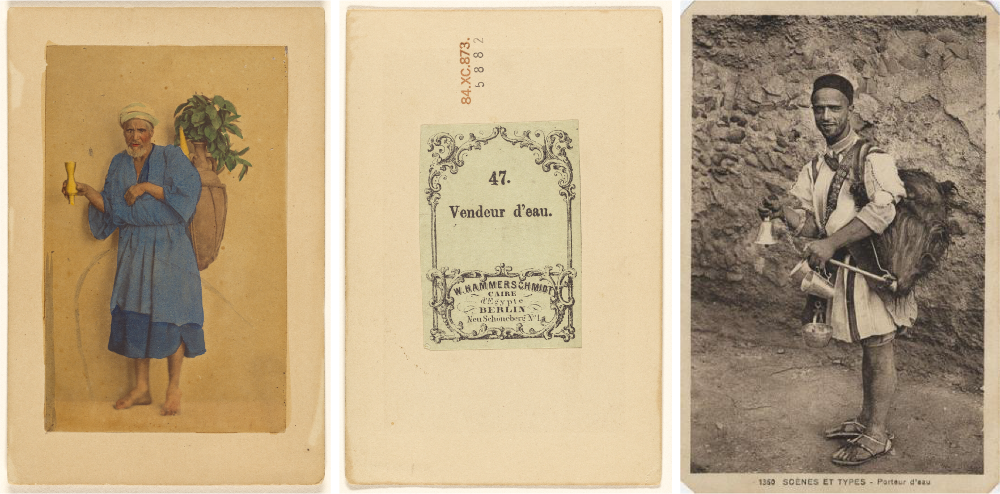
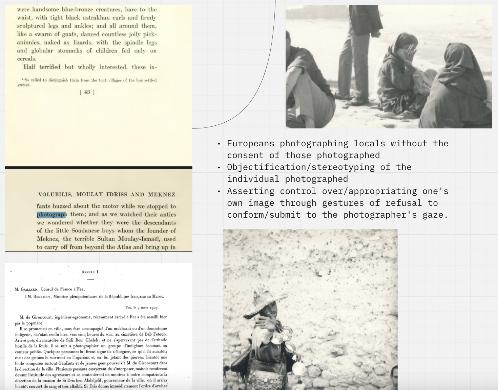
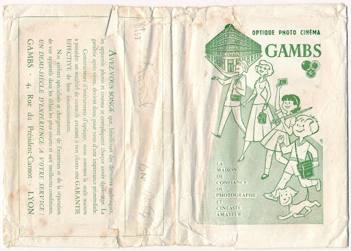
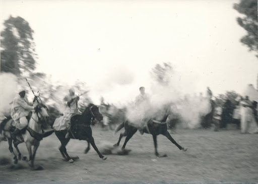
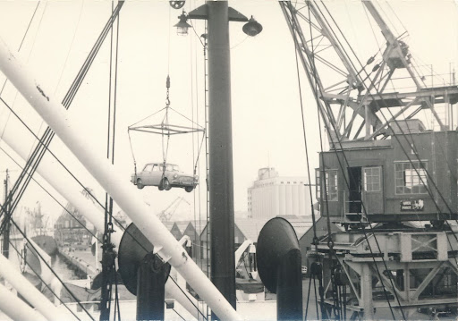

A case study on the representation of the Guerrab in European travel photography from Morocco
In 2019, my French grandfather's photo album from a trip to Morocco in 1965 piqued my curiosity. Flipping through the pages, I noticed that the album featured several Moroccan water carriers, known as Guerrab. Apparently, the photographer paid special attention to this professional group in various places during the trip. Moreover, these tourist snapshots adopt the stereotypical motifs of the so-called cartes de visite (fig. 1-2) and the later format of the picture postcard (fig. 3), which were produced for European tourists in North Africa in the late 19th and early 20th centuries. In these historic photographs, people were staged by the photographer (sometimes for a fee) in front of a studio backdrop or in the street.

(1-2) Wilhelm Hammerschmidt, Vendeur d'eau, about 1860, hand-colored albumen silver print, image: 8.6 × 5.2 cm (3 3/8 × 2 1/16 in.), mount: 10.5 × 7 cm (4 1/8 × 2 3/4 in.). The J. Paul Getty Museum, Los Angeles, 84.XC.873.5882. Licence CC0.
(3) France, Archives du ministère des Affaires étrangères, Collection Gandini, 1AE/108/11, carte N057180, Scènes et types - Porteur d'eau, environ 1936, Edition L. M. Casablanca.
(3) France, Archives du ministère des Affaires étrangères, Collection Gandini, 1AE/108/11, carte N057180, Scènes et types - Porteur d'eau, environ 1936, Edition L. M. Casablanca.
The possibility that a spark of reality, a momentary, instantaneous reaction of the person photographed, could disrupt the photographer's gaze was not only rare in the early years of photography due to the relatively long exposure times, but also prevented by the professional and commercial set-up and the often colonial context of production, which established unfair and unchallenged hierarchies. In general, they offered a compact and portable image of Morocco that met the expectations of European tourists, postcard recipients and armchair travellers alike. Against this background, the research on the tourist snapshots of the water carriers from the 1965 photo album is analysed and interpreted. Therefore, both the discourse of Orientalism and the potential of the snapshot to capture the momentary and unpredictable, what Walter Benjamin calls ‘das winzige Fünkchen Zufall, Hier und Jetzt’ ①, are taken into account.

(4) Screenshot of the research board with pictures from the 1965 photo album and book pages: Gaillard, M. : Consul de France à Fez, à M. Regnault, Ministre plénipotentiaire de la République française au Maroc, edited by Ministère des affaires étrangères: Affaires du Maroc. 1906-1907, Vol. 3, Paris 1907, p. 189 (Annexe I). Wharton, Edith: In Morocco, New York 1920, p. 43-44.
For the case study, particular attention is drawn to the presence or absence of the so-called reverse gaze of the person photographed: an active gaze or gesture by an individual towards the camera, claiming power over the image-making process and its outcome, even rejecting the gaze of the photographer who is attempting to produce a familiar, well-known motif. The photographer no longer disappears behind the camera, but is tacitly drawn into the image. (fig. 4) Consequently, the study highlights how the presence of a reverse gaze draws the attention of the photographer and the image viewer to the possible power imbalance underlying the photographic situation. Roland Barthes' ② phenomenological distinction between studium and punctum serves as a conceptual framework into which anthropological studies of tourist photography as well as research on Orientalist photography from West Asia and North Africa are introduced.
Original title B.A. thesis: 'Momente der Kontingenz in touristischen Reiseaufnahmen von Marokko aus dem Jahre 1965. Eine Analyse des reverse gaze des Fotosubjekts als retardierendes und kontrapunktierendes punctum innerhalb des orientalistischen studiums am Beispiel von Momentaufnahmen des marokkanischen Guerrabs (Wasserträger)' (2020), supervised by Dr. Volker Wortmann and Dr. Daniel Gad (Stiftung Universität Hildesheim).

(5) Paper envelope of the photo album of J. L., private archive.
The photo album traces the journey of four French men to Morocco in 1965. The photographs have been preserved as prints (landscape format: 8.8 × 13.8 cm) in four small albums with ring binder and cardboard cover (landscape format: 9.2 x 14.9 cm), always two in an envelope. (fig. 5) The first album contains views of Spain, Gibraltar, Tangier and Tetouan, while the photographs in the second album show the cities of Meknès, Fes, Rabat and Casablanca, as well as the ancient site of Volubilis. A third album features images of Ouarzazate and Marrakech. The fourth album shows a Moussem with Tbourida and Z3lula and an irrigation system with wells.

(6) Tbourida, 1965, 8.8 × 13.8 cm, photographic print, photo album of J. L., private archive.
There are no labels in the album to indicate places and events. However, it can be assumed that the four French men travelled from Gibraltar by ferry to Tangier, then in their own car via Tetouan, Fes, Moulay Idriss Zerhoun, Volubilis, Meknes, Rabat, Ouarzazate and Marrakech to Casablanca and finally by ship back to Europe.

(8) Port de Casablanca, 1965, 8.8 × 13.8 cm, photographic print, photo album of J. L., private archive.
① Benjamin, Walter: Kleine Geschichte der Fotografie (1931), in: Texte zur Theorie der Fotografie, ed.. by Bernd Stiegler, Stuttgart: Reclam 2010 [1931], p. 252.
② Barthes, Roland: Die helle Kammer. Bemerkungen zur Photographie, Frankfurt am Main: suhrkamp taschenbuch 201616 [1980].
② Barthes, Roland: Die helle Kammer. Bemerkungen zur Photographie, Frankfurt am Main: suhrkamp taschenbuch 201616 [1980].